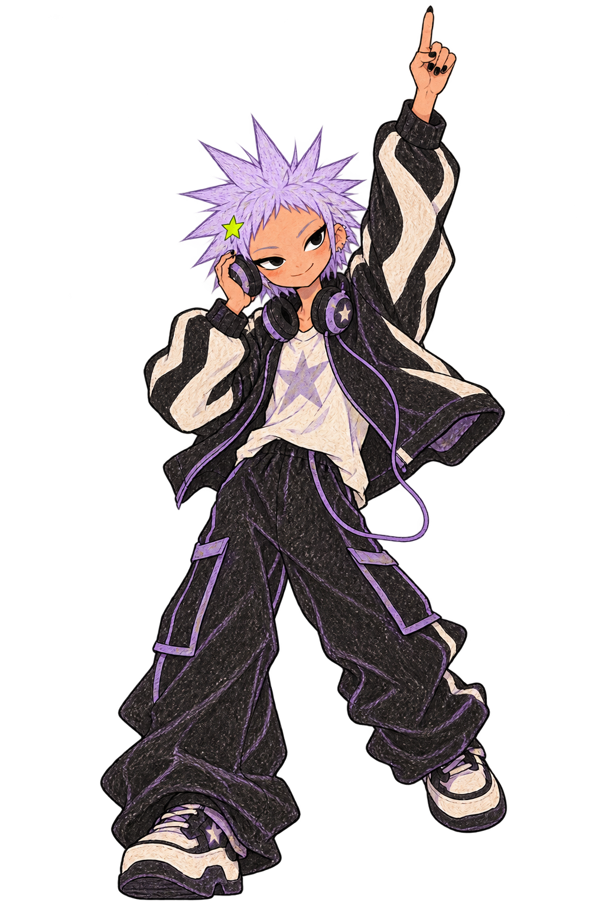

A · 角色领学
角色直接介绍当前课程，任务最明确；完整路线退到下方，不抢主操作。
基础路线0 / 6
第一次交接
先认识机器，再亲手完成一次从 A 到 B 的交接。

开始学习
- 01设置开始位置找到音乐入口并验证返回未开始
- 02听懂音乐结构节拍、小节与 16 拍乐句未开始
- 03让两首歌对齐BPM 与拍点同步未开始
A–D 处理角色与课程卡的关系；E–H 分别探索演出流程、设备空间、连续波形和完成收集。
角色直接介绍当前课程，任务最明确；完整路线退到下方，不抢主操作。
先认识机器，再亲手完成一次从 A 到 B 的交接。
角色沿路线出现在不同节点，像一张可继续向下探索的学习地图。

每节课是一张带角色的练习唱片；当前唱片抬起，适合横向浏览与回看。
6 节基础课，边听边做。

用 B 的路线表达先后与进度；只把当前位置展开成 C 的人物唱片卡，信息更集中。
课程组成一场完整演出：暖场、建立节奏、完成转场、独立收尾。
按真实 DJ 的准备顺序完成 6 节课。
从设备进入知识：唱盘、耳机、混音器和音箱分别对应一组课程。
6 节课成为同一条 Mix 波形上的 Cue 点，始终看得见从 A 到 B 的距离。
从播放、Cue 和 Sync 开始。
完成课程就获得人物动作印章；适合强化成长感和回看已完成任务。
完成一节，留下一个动作印章。